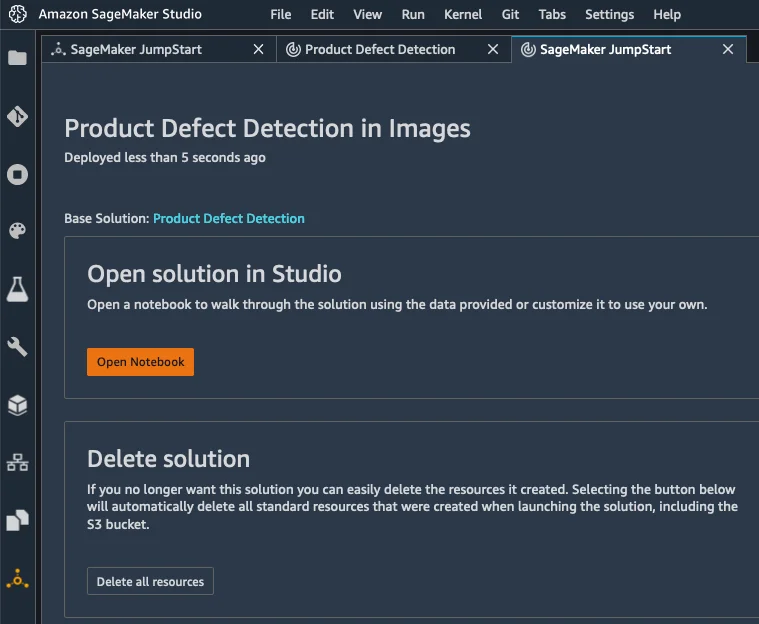
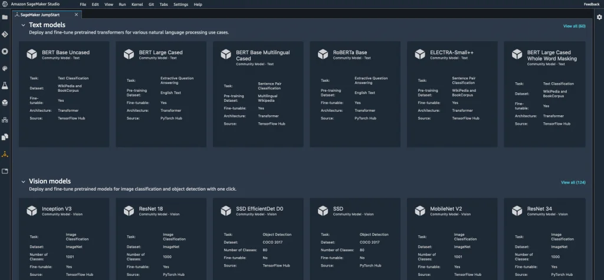
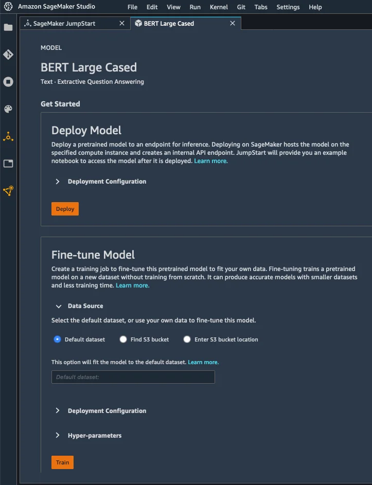
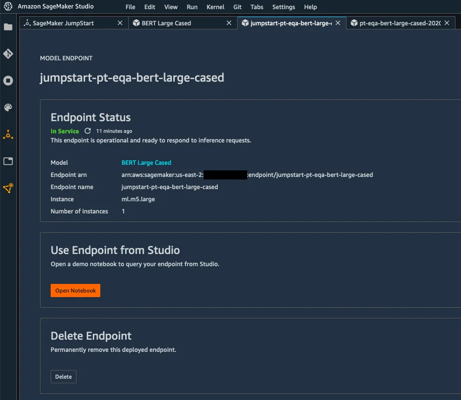

Published: 2020-12-08 | Originally published at AWS Blog
Today, I’m extremely happy to announce the availability of Amazon SageMaker JumpStart , a capability of Amazon SageMaker that accelerates your machine learning workflows with one-click access to popular model collections (also known as “model zoos”), and to end-to-end solutions that solve common use cases.
In recent years, machine learning (ML) has proven to be a valuable technique in improving and automating business processes. Indeed, models trained on historical data can accurately predict outcomes across a wide range of industry segments: financial services, retail, manufacturing, telecom, life sciences, and so on. Yet, working with these models requires skills and experience that only a subset of scientists and developers have: preparing a dataset, selecting an algorithm, training a model, optimizing its accuracy, deploying it in production, and monitoring its performance over time.
In order to simplify the model building process, the ML community has created model zoos, that is to say, collections of models built with popular open source libraries, and often pretrained on reference datasets. For example, the TensorFlow Hub and the PyTorch Hub provide developers with a long list of models ready to be downloaded, and integrated in applications for computer vision, natural language processing, and more.
Still, downloading a model is just part of the answer. Developers then need to deploy it for evaluation and testing, using either a variety of tools, such as the TensorFlow Serving and TorchServe model servers, or their own bespoke code. Once the model is running, developers need to figure out the correct format that incoming data should have, a long-lasting pain point. I’m sure I’m not the only one regularly pulling my hair out here!
Of course, a full-ML application usually has a lot of moving parts. Data needs to be preprocessed, enriched with additional data fetched from a backend, and funneled into the model. Predictions are often postprocessed, and stored for further analysis and visualization. As useful as they are, model zoos only help with the modeling part. Developers still have lots of extra work to deliver a complete ML solution.
Because of all this, ML experts are flooded with a long backlog of projects waiting to start. Meanwhile, less experienced practitioners struggle to get started. These barriers are incredibly frustrating, and our customers asked us to remove them.
Introducing Amazon SageMaker JumpStart
Amazon SageMaker JumpStart
is integrated in
Amazon SageMaker Studio
, our fully integrated development environment (IDE) for ML, making it intuitive to discover models, solutions, and more. At launch,
SageMaker JumpStart
includes:
SageMaker JumpStart also provides notebooks, blogs, and video tutorials designed to help you learn and remove roadblocks. Content is easily accessible within Amazon SageMaker Studio , enabling you to get started with ML faster.
It only takes a single click to deploy solutions and models. All infrastructure is fully managed, so all you have to do is enjoy a nice cup of tea or coffee while deployment takes place. After a few minutes, you can start testing, thanks to notebooks and sample prediction code that are readily available in Amazon SageMaker Studio . Of course, you can easily modify them to use your own data.
SageMaker JumpStart makes it extremely easy for experienced practitioners and beginners alike to quickly deploy and evaluate models and solutions, saving days or even weeks of work. By drastically shortening the path from experimentation to production, SageMaker JumpStart accelerates ML-powered innovation, particularly for organizations and teams that are early on their ML journey, and haven’t yet accumulated a lot of skills and experience.
Now, let me show you how SageMaker JumpStart works.
Deploying a Solution with Amazon SageMaker JumpStart
Opening
SageMaker Studio
, I select the “JumpStart” icon on the left. This opens a new tab showing me all available content (solutions, models, and so on).
Let’s say that I’m interested in using computer vision to detect defects in manufactured products. Could ML be the answer?
Browsing the list of available solutions, I see one for product defect detection.
Opening it, I can learn more about the type of problems that it solves, the sample dataset used in the demo, the AWS services involved, and more.
A single click is all it takes to deploy this solution. Under the hood, AWS CloudFormation uses a built-in template to provision all appropriate AWS resources.
A few minutes later, the solution is deployed, and I can open its notebook.

The notebook opens immediately in SageMaker Studio . I run the demo, and understand how ML can help me detect product defects. This is also a nice starting point for my own project, making it easy to experiment with my own dataset (feel free to click on the image below to zoom in).
Once I’m done with this solution, I can delete all its resources in one click, letting AWS CloudFormation clean up without having to worry about leaving idle AWS resources behind.
Now, let’s look at models.
Deploying a Model with Amazon SageMaker JumpStart
SageMaker JumpStart
includes a large collection of models available in the TensorFlow Hub and the PyTorch Hub. These models are pre-trained on reference datasets, and you can use them directly to handle a wide range of computer vision and natural language processing tasks. You can also fine-tune them on your own datasets for greater accuracy, a technique called transfer learning.

Here, I pick a version of the
BERT
model trained on question answering. I can either deploy it as is, or fine-tune it. For the sake of brevity, I go with the former here, and I just click on the “Deploy” button.

A few minutes later, the model has been deployed to a real-time endpoint powered by fully managed infrastructure.

Time to test it! Clicking on “Open Notebook” launches a sample notebook that I run right away to test the model, without having to change a line of code (again, feel free to click on the image below to zoom in). Here, I’m asking two questions (“ What is Southern California often abbreviated as? ” and “ Who directed Spectre? “), passing some context containing the answer. In both cases, the BERT model gives the correct answer, respectively “ socal ” and “ Sam Mendes “.
When I’m done testing, I can delete the endpoint in one click, and stop paying for it.
Getting Started
As you can see, it’s extremely easy to deploy models and solutions with
SageMaker JumpStart
in minutes, even if you have little or no ML skills.
You can start using this capability today in all regions where SageMaker Studio is available, at no additional cost.
Give it a try and let us know what you think.
As always, we’re looking forward to your feedback, either through your usual AWS support contacts, or on the AWS Forum for SageMaker.
- JulienSpecial thanks to my colleague Jared Heywood for his precious help during early testing.
Julien is the Artificial Intelligence & Machine Learning Evangelist for EMEA . He focuses on helping developers and enterprises bring their ideas to life. In his spare time, he reads the works of JRR Tolkien again and again.
{kind=link}
{kind=link}
{kind=link}
{kind=link}
{kind=link}
{kind=link}